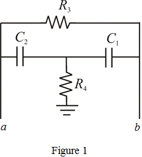

Write the transfer function of the Figure 1.
Compare the numerator expression of the transfer function with the standard second order system, . That is,

The expression for  is,
is,
And,
The expression for  is,
is,
Refer to Figure 16.29 in the textbook for the active-filter feedback loop generated using the bridged-T network.
Consider the feedback loop (bridged-T network).

Write the transfer function of the Figure 1.
Compare the numerator expression of the transfer function with the standard second order system, . That is,
The expression for is,
And,
The expression for is,
The resonant frequency of the active-filter feedback loop generated using the bridged-T network is,
Substitute 1 nF for and  for
for 
The quality factor is,
Substitute the corresponding values.
Simplify further to calculate the resistance value.
Substitute
Thus, the design parameters of the circuit are, .